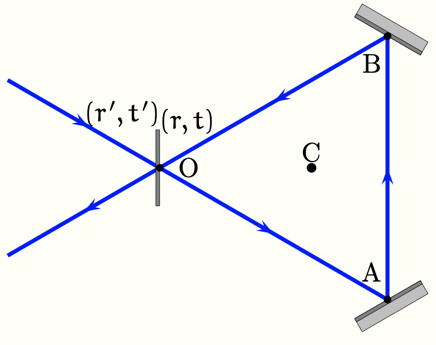

PrepOral
[MP] [Maison] [8]
Gyrolaser
Enoncé
On envisage le montage de la figure ci dessous comprenant deux miroirs parfaits de coefficients de réflexion
en amplitude complexe égaux à $-1$ et une séparatrice telle que les coefficients de réflexion et transmission
valent $(r, t)$ lorsque l’onde incidente est à l’intérieur de la cavité, et $(r', t')$ lorsque l’onde incidente
est à l’extérieur de la cavité, avec :
\[
t' = t, \qquad r' = -r, \qquad \text{et} \qquad r^2 + t^2 = 1.
\]

La lumière décrit dans la cavité un parcours confondu avec le triangle équilatéral $OAB$ de longueur totale $
L = OA + AB + BO$. Le dispositif est éclairé par une onde monochromatique de longueur d’onde $\lambda$ et
d’amplitude complexe mesurée en $O$ égale à $a_1$.
1. Exprimer $s_{1,k}$ l’amplitude complexe mesurée en $O$ de l’onde qui émerge de la cavité en
ayant accompli $k \geq 1$ tours dans celle-ci.
2. En déduire l’expression $s_1$ de l’amplitude complexe mesurée en $O$ de l’onde émergeant de
la cavité en fonction de $a_1$, $\varphi$ et $r$. Comparer les éclairements des ondes incidente et émergente.
La cavité est remplie d'un milieu qui amplifie la lumière : lors d’un tour de cavité, l’amplitude complexe de
l’onde est multipliée par un coefficient réel positif $g$ (appelé gain).
3. Exprimer à nouveau $s_1$.
4. En déduire deux conditions pour qu’une onde d’amplitude non nulle puisse se propager dans la
cavité même en l’absence d’onde incidente. Quelles sont alors les pulsations possibles pour ce Laser ?
5. On place ce Laser sur un plateau tournant à la vitesse angulaire $\Omega$, que dire des
fréquences du Laser ?
Commentaires
Encore jamais posé !
Corrigé
1) $$s_k=a_1 (1-r^2) r^k \exp{(-i k \phi)}$$ où $\phi=2\pi L/\lambda$.
2) $$s_1=a_1 \frac{e^{-i\phi}-r}{1-re^{-i\phi}}$$ On retrouve $s_1^2=a_1^2$.
3) $$s_1=a_1 \frac{ge^{-i\phi}-r}{1-rge^{-i\phi}}$$ 4) On veut que le dénominateur tende vers $+\infty$ : $g=1/r$ et $\phi=0 \; [2\pi]$. On compense les pertes et les interférences sont constructives, ainsi on sélectionne les pulsations $\omega_n=2\pi nc/L$.
5) On remarque que sans rotation deux ondes se propagent dans les deux sens possible. Avec la rotation, on peut considérer pour simplifier que le chemin suivi par la lumière et un cercle de rayon $R=L/(2\pi)$. Les distances parcourues par les deux ondes (2 sens) sont changées : $L'=L \pm \Delta L$ où $\Delta L=\Omega L^2/(2 \pi c)$ à l'ordre le plus bas en $\Delta L/L$. Ainsi, on double toutes les fréquences : $\omega_n'^{\pm}=2\pi nc/(L\pm \Delta L)$. La différence entres ces fréquences est proportionnelle à la vitesse angulaire : intérêt de ce dispositif.